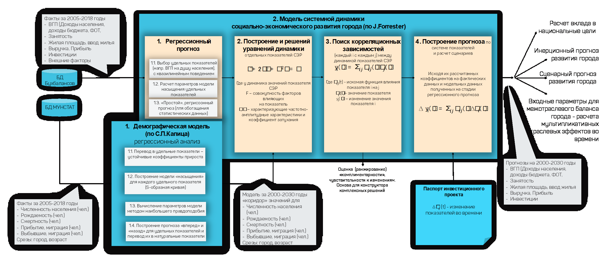
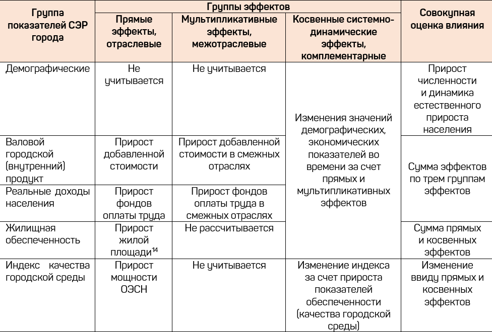

6 Методическое обеспечение
В понятие методического обеспечения мы вкладываем совокупность документов, описывающих технологические приемы для получения конкретных результатов с помощью цифровых двойников городов.
6.1 История формирования методологии
Научно-методические основы ЦДГ берут начала из развития идей следующих научных дисциплин:
- системный анализ
- системная динамика
- эконометрических моделей
- метод затраты-выпуск
- теория автоматического управления
- теория надежности,
- теория упругости,
- методы спектрального анализа, алгоритмы расчета балок, алгоритмы расчета напряженно-деформированного состояния с учетом концентрации напряжений
- инженерные теории прочности и долговечности
Основами для создания авторской методологии Цифрового Двойника территорий послужили следующие работы сотрудников Цифрового Двойника:
- В.В.Аладинский. Мониторинг объектов трубопроводного транспорта, формирующий достаточно универсальную основу для использования централизованных моделей крупномасштабных систем.
- Гумеров С.З. Манифест моделе-ориеентированной системы управления
6.2 Базовый методический подход
Основной подхода является что поддержка управленческих решений в территориальном (отраслевом) управлении должна строиться на основе оценок, выдаваемых расчетами на цифровом двойнике территории (отрасли).

Основные концепты методологии моделе-ориентированного управления
Цифровой двойник как система показателей увязывает динамику базовых (измеряемых) и целевых показателей системой уравнений во времени (прогнозные сценарии), жизненному циклу, пространству и отраслях.
Цифровой двойник строится по принципу сверху вниз. От компактной системы целей, определяемой стратегией развития территории в целом к отдельным сферам и видам деятельности, муниципальным образованиям, поселениям и отдельным объектам и субъектам размещенных/расселенных по территории.
 Фактические, прогнозные и плановые показатели, полученные с помощью единого Цифрового двойника территории обеспечивают целостность параметров управленческих решений и реализуются через типовые механизмы территориального управления, в том числе документы стратегического планирования.
Фактические, прогнозные и плановые показатели, полученные с помощью единого Цифрового двойника территории обеспечивают целостность параметров управленческих решений и реализуются через типовые механизмы территориального управления, в том числе документы стратегического планирования.
 Описание цифрового двойника ведется в следующих функциональных блоках и срезах (измерениях):
Описание цифрового двойника ведется в следующих функциональных блоках и срезах (измерениях):
- Блок 1. Социально-экономическое развитие, охватывающая макроэкономические показатели развития территории
- Блок 2. Межотраслевой баланс ресурсов, обеспечивающий целостность учета движения ресурсов в экономике между различными видами экономической деятельности
- Блок 3. Межтерриториальный баланс ресурсов, обеспечивающий пространственную целостность учета движения ресурсов между муниципальными образованиями и поселениями
- Блок 4. Внутриотраслевые балансы, обеспечивающий внутриотраслевой учет внутри одного вида экономической деятельности
- Блок 5. Жизненный цикл инфраструктуры, обеспечивающий целостность описания состояния инфраструктуры жизнедеятельности территории
- Блок 6. Природно-антропогеннаая система, описывающая взаимное влияние социально-экономического и экологического состояния территории
- Измерение 1: Пространственный срез от города в целом до отдельного элемента инфраструктуры.
- Измерение 2: Временной срез (декомпозиция состояния во времени)
- Измерение 3: Структурно-функциональный срез
- Измерение 4: Логистический срез

Функционально-структурная декомпозиция цифрового двойника территории
6.3 Внутриотраслевой баланс
Внутриотраслевые балансы предназначены для поддержки регулирования развития отдельных отраслей, удержание уровня их вклада в структуру экономики территории в целом.
По итогам создания внутриотраслевого баланса системы коммунальной инфраструктуры и энергетики (ВОБ СКИиЭ) Санкт-Петербурга в 2017 году, сотрудниками ЦД, совместно с администрацией города были разработаны Концепция и Методика формирования и применения ВОБ СКИиЭ для подготовки управленческих решений в сфере тарифного и отраслевого регулирования.
6.3.1 Концепция балансовой модели СКИиЭ
Концепция формирования и применения внутриотраслевого баланса ресурсов систем коммунальной инфраструктуры и энергетики региона представляет собой систему целей, задач, принципов и методов, обеспечивающих прогнозирование, планирование и принятие оптимальных решений в процессе государственного управления в сфере теплоснабжения, электроснабжения, газоснабжения, водоснабжения и водоотведения.
Разработка концепции ВОБ СКИиЭ обусловлена необходимостью создания единого системного подхода исполнительных органов государственной власти к развитию систем теплоснабжения, электроснабжения, газоснабжения, водоснабжения, водоотведения и тарифному регулированию в указанных сферах.
6.3.2 Цели ВОБ СКИиЭ
Цели создания внутриотраслевого баланса ресурсов систем коммунальной инфраструктуры и энергетики региона:
- увеличение темпов социально-экономического развития путем повышения результативности и эффективности использования ресурсов региона на основе параметров ВОБ СКИиЭ и долгосрочного регулирования цен (тарифов);
- определение приоритетов и задач государственного управления, способы их эффективного достижения в системах коммунальной инфраструктуры и энергетики и сфере государственного управления региона и его муниципальных образований;
- формирование управленческих решений, стимулирующих повышение эффективности деятельности предприятий в сфере теплоснабжения, электроснабжения, газоснабжения, водоснабжения и водоотведения.
6.3.3 Задачи ВОБ СКИиЭ
Задачи создания внутриотраслевого баланса ресурсов систем коммунальной инфраструктуры и энергетики региона:
- создание единого электронного механизма, объединяющего сбор, анализ, обработку, прогноз, планирование технических и экономических показателей в сфере теплоснабжения, электроснабжения, газоснабжения, водоснабжения и водоотведения;
- обеспечение единых технико-экономических параметров при создании (корректировке) схем теплоснабжения, электроснабжения, газоснабжения, водоснабжения и водоотведения и формировании тарифов, подлежащих государственному регулированию.
6.3.4 Общие принципы
Общие принципы формирования внутриотраслевого баланса ресурсов систем коммунальной инфраструктуры и энергетики региона:
- достижение оптимального сочетания экономических интересов потребителей, регулируемых организаций и экономики региона в целом;
- создание стабильных и недискриминационных условий для предприятий, осуществляющих деятельность в сфере теплоснабжения, электроснабжения, газоснабжения, водоснабжения и водоотведения;
- повышение точности прогнозирования объемов потребления и потерь коммунальных, энергетических и финансовых ресурсов, определения оптимальных объемов затрат на надежное и безопасное производство, передачу и распределение коммунальных и энергетических ресурсов на территории региона;
- обеспечения оценки результативности и эффективности проектов инвестиционных
и производственных программ в сфере теплоснабжения, электроснабжения, газоснабжения, водоснабжения, водоотведения;
- обеспечение тарифных решений с учетом обоснованной доходности и эффективности регулируемых организаций, эксплуатирующих системы коммунальной инфраструктуры и энергетики региона.
6.3.5 Метод
Метод формирования внутриотраслевого баланса ресурсов систем коммунальной инфраструктуры и энергетики региона
Для осуществления скоординированной системы управления в сферах теплоснабжения, электроснабжения, газоснабжения, водоснабжения и водоотведения основным методом формирования ВОБ является метод экономико-математического моделирования на основе Методики о Внутриотраслевом балансе ресурсов систем коммунальной инфраструктуры и энергетики.
6.4 Поддержка принятия решений в управлении транспортной системой региона
Реализация проектов с использованием ВОБ СКИиЭ в Санкт-Петербурге позволило спроецировать и реализовать задачи количественного управления затратами и инвестициями в транспортном комплексе региона на основе транспортно-экономического баланса региона (ТЭБ).
Транспортно-экономический баланс является взаимоувязанной системой показателей, всесторонне характеризующей функционирование и развитие транспортной системы региона.
Методика предназначена для использования органами администрирования общественного транспорта региона (муниципалитета), взаимодействия и координации деятельности перевозчиков, органов государственной власти, реализации и проведению политики в сфере городского и пригородного транспорта, внешнего транспорта, а также междугородного и международного пассажирского автомобильного транспорта.
Методика определяет требования к формированию и применению ТЭБ как системы показателей, всесторонне характеризующей ретроспективную и перспективную динамику технико-экономического состояния транспортной системы региоан, обеспечивающую органы государственной власти, потребителей, перевозчиков, поставщиков и инвесторов сферы Пассажирского транспорта единым инструментом комплексного учета, анализа, прогнозирования, планирования и оценки проектов государственных и управленческих решений.
6.4.1 Цели ТЭБ
Целями Методики являются:
- унификация и совершенствование системы показателей, методов и форм комплексного учета, прогнозирования, целеполагания и планирования в сфере Пассажирского транспорта;
- рост результативности государственных и управленческих решений, обеспечивающих рост доступности, эффективности, надежности и безопасности сферы Пассажирского транспорта, а также рост качества жизни и качества городской среды в целом за счет внедрения научно-технологической продукции, повышения производительности труда, эффективности использования материальных и энергетических ресурсов, основных и оборотных фондов, эффективности капитальных вложений, снижения себестоимости и роста уровня рентабельности транспортных услуг;
- обеспечение баланса интересов разных групп пользователей транспортной системы между собою и объектами транспортной инфраструктуры, баланса между удовлетворением сегодняшних потребностей и сохранением запаса ресурсов для удовлетворения потребностей будущих поколений, баланса внутренних и внешних функций транспортной системы.
6.4.2 Задачи ТЭБ
Задачами Методики является определение:
- общих принципов формирования ТЭБ,
- состава системы показателей ТЭБ и методов их определения (измерения, расчета),
- порядка формирования фактического (ретроспективного) ТЭБ,
- порядка формирования прогнозного ТЭБ,
- порядка применения фактического (ретроспективного) ТЭБ для экономического анализа финансово-хозяйственной деятельности в сфере Пассажирского транспорта,
- порядка применения прогнозного ТЭБ для оценки результативности проектов государственных и управленческих решений,
- порядка формирования планового ТЭБ, в соответствии с утвержденными государственными и управленческими решениями.
6.4.3 Общие принципы формирования баланса
ТЭБ является способом обобщения, группировки и сопоставления объемов перевозок пассажиров, выполненной транспортной работы, потерь и затрат всех видов ресурсов (материальных, энергетических, трудовых, производственных, денежных, временных) на выполнение перевозок, функционирование и развитие подвижного состава и транспортной инфраструктуры.
ТЭБ представляется в форме таблиц «выпуск-затраты», заполняемых планово-экономическими отделами транспортных организаций и/или уполномоченной организацией.
Таблицы «выпуск-затраты» ТЭБ имеют следующие уровни детализации:
- уровень 1 «Транспортная система в целом» (в части Пассажирского транспорта);
- уровень 2 «Отдельные виды экономической деятельности» (автобусный транспорт, троллейбус, трамвай, метрополитен, таксомоторный транспорт, транспорт индивидуального пользования);
- уровень 3 «Транспортная организации», заполняемой в разрезе технологических переделов;
- уровень 4 «Отдельных маршрутов, объектов и субъектов транспортной системы (агент-ориентированный баланс).
ТЭБ формируется в следующих вариантах, в зависимости от рассматриваемого временного периода:
- фактический баланс – формируется ежегодно на основании фактических значений технико-экономических показателей, достигнутых за отчетный год, предшествующий текущему календарному году;
- ретроспективный баланс – актуализируется ежегодно путем добавления данных по фактическому балансу за очередной отчетный год;
- прогнозный баланс – формируется ежегодно на основании усредненных, фактически сложившихся относительных коэффициентов ретроспективного баланса, с учетом прогнозных значений по объемам пассажиропотока, равновесных стоимостей по основным видам продукции, формируемых прогнозным межотраслевым балансом региона;
- сценарные балансы – формируется по мере проведения оценки результативности проектов государственных и управленческих решений на основании прогнозного баланса, с учетом изменения относительных коэффициентов, достигаемых в результате своевременной реализации проекта государственного и управленческого решения;
- плановый баланс – формируется ежегодно на основании прогнозного баланса, с учетом изменения относительных коэффициентов, параметров сценарных условий, в результате своевременной реализации совокупности утвержденных государственных и управленческих решений.
ТЭБ реализуется посредством экономико-математического моделирования. Экономико-математическая модель ТЭБ обеспечивает количественную взаимосвязь значений показателей ТЭБа между собой, между уровнями детализации, между видами экономической деятельности, между ретроспективными и прогнозными значениями, между параметрами управленческих решений и сценарно-плановыми значениями ТЭБ.
6.4.4 Состав системы показателей баланса
Система показателей ТЭБ сгруппирована в три блока:
- технико-экономические показатели характеризуют материально-производственную базу и комплексное использование ресурсов регулируемых видов деятельности;
- относительные коэффициенты отражают удельные характеристики, пропорции технико-экономических показателей регулируемых видов деятельности;
- обобщающие показатели эффективности отражают уровень эффективности деятельности регулируемых организаций при заданном уровне качества.
6.4.5 Базовые технико-экономические показатели
В состав базовых технико-экономических показателей ТЭБ включены:
численность населения на обслуживаемой территории;
среднесписочная численность работников, занятых в соответствующем виде экономической деятельности Системы;
выручка , в том числе выручка от перевозки пассажиров, прибыль от нерегулируемых видов деятельности, осуществляемых транспортной организацией;
субсидии на перевозку пассажиров и их багажа по регулируемому тарифу;
прочие субсидии бюджета;
объемы потребления транспортной услуги;
объемы транспортной работы в натуральном выражении;
производственная мощность, определяемая максимальной суммарной вместимостью подвижного состава, пропускной способностью транспортной инфраструктуры;
остаточный срок полезного использования основных фондов;
потери в перевозках, расходов подвижного состава и транспортной инфраструктуры в натуральном выражении, в стоимостном выражении;
условно-переменные затраты материальных, коммунальных и энергетических ресурсов в натуральном выражении, включая расходы на оплату труда, начисление страховых взносов, обязательное страхование (начисление в социальные фонды) на оплату труда водителей, кондукторов и рабочих по ремонту подвижного состава, расходы на электроэнергию и топливо на движение, расходы на смазочные и прочие эксплуатационные материалы для подвижного состава, материалы и запчасти на ТОиР подвижного состава, расходы на техническое обслуживание и эксплуатационный ремонт подвижного состава, амортизацию подвижного состава и капитальный ремонт подвижного состава, прочие расходы по обычным видам деятельности;
условно-постоянные затраты материальных, коммунальных и энергетических ресурсов в натуральном выражении, расходы на содержание контактно-кабельной сети, а также тяговых подстанций (расходы на содержание энергохозяйства), расходы на содержание и ремонт трамвайного пути, расходы на содержание службы движения, накладные расходы, включая расходы на содержание службы автоматики и связи, управленческие расходы, коммерческие расходы, расходы на электроэнергию, тепловую энергию, газ, холодную и горячую воду, сточные воды на прочую деятельность;
условно-постоянные затраты, в том числе налоги, приобретение материальных, коммунальных и энергетических ресурсов:
в стоимостном выражении расходы на содержание контактно-кабельной сети, а также тяговых подстанций (расходы на содержание энергохозяйства), расходы на содержание и ремонт трамвайного пути, расходы на содержание службы движения, накладные расходы, включая расходы на содержание службы автоматики и связи, управленческие расходы, коммерческие расходы, расходы на электроэнергию, тепловую энергию, газ, холодную и горячую воду, сточные воды на прочую деятельность, капитальный и текущий ремонт;
капитальные вложения в стоимостном выражении, по освоению в текущем году, в том числе из собственных средств, амортизации, бюджетных средств, прочих источников;
внереализационные расходы, включая социальные расходы и другие прочие внереализационные расходы;
внереализационные доходы;
среднегодовая стоимость основных фондов и объем необходимых оборотных средств;
- капитал и резервы;
- заемные средства;
- кредиторская задолженность;
- дебиторская задолженность;
- финансовый результат, без учета полученных субсидий, с учетом полученных субсидий.
6.4.6 Относительные коэффициенты
В состав относительных коэффициентов включены показатели:
- удельное потребление транспортных услуг в расчете на транспортную работу;
- прямые производственные коэффициенты;
- удельные затраты приобретаемых материальных, коммунальных и энергетических ресурсов на транспортную работу, эксплуатацию транспортной инфраструктуры;
- цена приобретаемых условно-переменных и условно-постоянных материальных, коммунальных и энергетических ресурсов;
- удельные условно-постоянные затраты;
- норма амортизации подвижного состава и транспортной инфраструктуры;
- равновесная стоимость транспортной услуги.
- норма капитальных вложений на транспортный состав и инфраструктуру;
6.4.7 Обобщающие показатели эффективности
В состав обобщающих показателей эффективности включены показатели, характеризующие:
- экономическую эффективность пассажироперевозок:
- удельные приведенные затраты в расчете на душу населения;
- удельные приведенные затраты в расчете на перевезенного пассажира;
- рентабельность;
- транспортная доступность;
- эффективность использования основных фондов, оборотных средств и капитальных вложений:
- фондоотдача;
- оборачиваемость оборотных средств;
- эффективность капитальных вложений;
- удельные капвложения на единицу введённой мощности;
- эффективность использования труда:
- производительность труда относительно мощностей;
- производительность труда относительно потребления;
- эффективность использования материальных ресурсов;
- энергетическую эффективность;
- качество транспортного обслуживания населения, в том числе:
- территориальная доступность остановочных пунктов;
- доступность остановочных пунктов, автовокзалов и автостанций для маломобильных групп населения;
- доступность транспортных средств для маломобильных групп населения;
- ценовая доступность поездок по маршрутам регулярных перевозок;
- оснащённость автовокзалов, автостанций и остановочных пунктов;
- доля остановочных пунктов, обслуживаемых с минимальной нормативной частотой;
- соблюдение расписания маршрутов регулярных перевозок;
- оснащённость транспортных средств средствами информирования пассажиров;
- доля транспортных средств с нормативным уровнем шума в салоне;
- доля рейсов с нормативной температурой в салоне транспортного средства;
- соблюдение норм вместимости;
- соблюдение норм по количеству пересадок;
- доля транспортных средств высоких экологических классов.
- оснащённость автовокзалов, автостанций и остановочных пунктов;
- территориальная доступность остановочных пунктов;
6.5 Оценка влияния инвестиционных проектов на развитие города
В 2020 году, по заказу крупнейшего института развития коллективом ЦД была разработана и автоматизирована методика оценки влияния инвестиционных проектов на социальное и экономическое развитие городов. Результаты данного труда предназначены для формирования оптимальных (по критерию вклада в развития города) инвестиционных портфелей для развития инфраструктуры.
6.5.1 Назначение методики
Методика определяет:
– комплекс показателей социально-экономического развития (далее – СЭР) городов;
– порядок сбора и обработки статистических данных по значениям показателей СЭР;
– порядок оценки вклада показателей СЭР в достижение национальных целей;
– порядок формирования базового (инерционного) прогноза СЭР, отражающего фактически сложившиеся тенденции и факторы СЭР;
– метод оценки величины взаимного влияния показателей СЭР и их восприимчивости к изменениям внешних факторов;
– порядок оценки и ранжирования инвестиционных потенциалов городов в разрезе отдельных видов экономической деятельности и территории;
– порядок оценки влияния инвестиционного проекта на СЭР.
Основные принципы Методики:
– обеспечение единого подхода к количественной и сопоставительной оценке достигнутого и прогнозного уровня социально-экономического развития городов, выявление и сравнение их потенциалов между отдельными городами, оценка влияния внешних факторов и инвестиционных проектов на долгосрочном периоде времени;
– выявление и ранжирование инвестиционных ниш и проектов, направленных на достижение максимальных эффектов при соблюдении баланса экономических интересов города, банка и оператора проекта;
– оценка мультипликативных и динамических эффектов, носящих межотраслевой, межтерриториальный и межвидовой характер;
– выявление неявных связей и условий получения максимального эффекта от инвестиций;
– решение задач прогнозирования и оценки влияния.
6.5.2 Нормативные ссылки и литература
- Указ Президента Российской Федерации от 07.05.2018 №204 «0 национальных целях и стратегических задачах развития Российской Федерации на период до 2024 года».
- Федеральный закон «О стратегическом планировании в Российской Федерации» от 28.06 .2014 №172-Ф3.
- Распоряжение Правительства РФ от 13.02.2019 №207-р об утверждении Стратегии пространственного развития Российской Федерации.
- Основы государственной политики регионального развития РФ на период до 2025 года (утверждены Указом Президента РФ 16.01.2017 № 13).
- Распоряжение Правительства от 27.12.2019 РФ №3227-р об утверждении Плана реализации Стратегии пространственного развития Российской Федерации.
- Прогноз социально-экономического развития РФ на период до 2036 года (одобрен на заседании Правительства РФ 22.11.2018).
- Приказ Министерства экономического развития РФ от 27 марта 2019 г. № 167 «06 утверждении формы тест-паспорта объекта капитального строительства и Методики оценки эффективности использования средств федерального бюджета, направляемых на капитальные вложения».
- Распоряжения Правительства РФ №510-р от 23 марта 2019 года «Об утверждении методики оценки качества городской среды».
- Постановление Правительства от 29.11.2019 РФ №1512 от 29.11.2019 «06 утверждении методики оценки социально-экономических эффектов от проектов строительства (реконструкции) и эксплуатации объектов транспортной инфраструктуры, планируемых к реализации с привлечением средств федерального бюджета, атакже с предоставлением государственных гарантий Российской Федерации и налоговых льгот».
- Приказ Минэкономразвития России от 14.12.2013 № 741 «Об утверждении методических указаний по подготовке стратегического и комплексного обоснований инвестиционного проекта, а также по оценке инвестиционных проектов, претендующих на финансирование за счет средств Фонда национального благосостояния и (или) пенсионных накоплений, находящихся вдоверительном управлении государственной управляющей компании, на возвратной основе».
- Система национальных счетов 2008. Статистическая база всеобъемлющий, систематизированный и гибкий комплекс макроэкономических счетов, используемый для разработки политики, анализа и научных исследований. Организация Объединенных Наций, Всемирный банк, Организация Экономического Сотрудничества и Развития.
- Капица С. П. Парадоксы роста: Законы развития человечества. - М.: «Альпина Нон-фикшн», 2010. C. 192. - ISBN 978-5-9167-1047-2.
- Джей Форрестер. «Динамика развития города». 1974
- Леонтьев В.В. Межотраслевая экономика. 1997.
6.5.3 Термины и определения
Базовые показатели - количественно-измеримые показатели, по которым возможно проведение статистических, социологических наблюдений или прямых измерений.
Базовый прогноз (инерционный сценарий) - совокупность значений показателей социально-экономического развития города на перспективный период, учитывающий сохранение сложившихся тенденций.
Вид бизнеса - вид экономической деятельности, направленной на получение прибыли.
ВР(Г)П - валовой региональный (городской) продукт.
Граничные условия - максимальные и минимальные значения, которые может принимать тот или иной показатель согласно расчетам, выполненным в математической модели.
Допущения по внешним факторам - сценарные значения параметров, используемые для построения прогнозов.
Измерение - атрибут показателя, содержащий числовое значение или набор числовых значений, характеризующий одно из представлений объекта (процесса, функции), или его декомпозицию.
Инвестиционный потенциал - рассчитываемый объем инвестиций, возврат которых возможен вследствие получения дополнительной прибыли по отдельным видам экономической деятельности за счет увеличения сбыта (продаж) и повышения экономической эффективности производства, а также повышения уровня обеспеченности объектами социально-экономического назначения.
Интегральная оценка отраслевых рыночных ниш - оценка инвестиционного потенциала для отдельного вида экономической деятельности в отдельном городе, с возможной пространственной привязкой.
Методика - Методика оценки влияния инвестиционного проекта на социально-экономическое развитие города.
Модуль (программный модуль) - функционально законченный фрагмент программы, оформленный в виде отдельного(-ых) файла(-ов) с исходным кодом или поименованной непрерывной её части, и предназначенный для использования в системе.
Набор обеспечений - результат разработки в виде математического, методического и информационного обеспечений.
Направление (сфера, отрасль) городской экономики - отрасль (сфера, вид экономической деятельности) городской экономики, в отношении которой может применяться Методика.
Обеспеченность ОЭСН - показатель, характеризующий качество городской среды через уровень удовлетворения потребности населения в объектах социально-экономического назначения согласно нормативам градостроительного проектирования.
Оценка влияния инвестиционного проекта на СЭР - изменение показателей сценарного и базового варианта прогноза СЭР в абсолютных и относительных показателях в результате реализации ИП.
Параметры настройки инвестиционных проектов - количественные значения финансовых, отраслевых и иных показателей проекта, отраженные в форме заполненного Паспорта инвестиционного проекта.
Паспорт города - форма сбора и представления значений показателей социально-экономического развития и отдельных сфер городской экономики.
Паспорт инвестиционного проекта - форма сбора и представления характеристик инвестиционного проекта.
Плотность населения - количество жителей (населения) на единицу площади территории.
Показатель - числовое значение или набор числовых значений, характеризующий состояние объекта (процесса, функции).
Промышленные виды бизнеса - виды бизнеса, предусматривающие производство промышленной продукции, потребление которой осуществляется как в рамках региона размещения производственного предприятия, так и в других субъектах Российской Федерации.
Расчетные модули - модули, состоящие из входных, расчетных и выходных форм (показателей), реализующие отдельные функции расчета, анализа и оценки, описанные в Методике.
Регион - субъект Российской Федерации.
Сервисные виды бизнеса - виды бизнеса в сфере городских коммерческих розничных услуг, включая такие отрасли городской экономики как: розничная торговля, общественное питание, сфера отдыха и развлечений, образование, здравоохранение.
Сценарий - один из вариантов СЭР города с заданными параметрами прогнозирования в отношении внешних факторов.
Сценарный прогноз - развитие города с учетом реализации инвестиционного проекта.
Хранилище данных - информационная подсистема, обеспечивающая хранение и актуализацию данных в определенной структуре, требуемой для проведения аналитических изысканий или проведения математических расчетов.
Целевой город - город (муниципальное образование) Российской Федерации, в отношении которого существует возможность получения необходимых данных, по которым будет проводиться первичное наполнение системы.
Целевые показатели (индикаторы) - показатели, включающие в себя индикаторы национальных целей и национальных проектов РФ.
Целевой регион продаж - регион, выручка от продажи продукции в который покрывает издержки на производство, продажу и транспортировку продукции, производимой в целевом городе.
6.5.4 Обозначения, сокращения и источники данных
6.5.4.1 Источники исходных данных
| № | Источник информации |
|---|---|
| И1 | Бухгалтерские балансы |
| И2 | Основные средства |
| ИЗ | СНС данные |
| И4 | СНС методика |
| И5 | Методика межотраслевого баланса (метод «выпуск-затраты») |
| И6 | Общероссийский классификатор территорий муниципальных образований (ОКТМО) |
| И7 | Общероссийский классификатор видов экономической деятельности (ОКВЭД) |
| И8 | Муниципальная статистика |
| И9 | Региональные (муниципальные) нормы градостроительного проектирования |
| И10 | Паспорт инвестиционного проекта. Приложение. Шифр документа ЦД.0427 |
| И11 | Укрупненные сметные нормативы (НЦС-81-02-ХХ-2О20) |
| И12 | Среднегодовая мощность производства |
| И13 | Площади объектов социально-экономического назначения (ГИС) |
6.5.4.2 Сокращения
ВГП - валовой городской продукт.
ИП - инвестиционный проект.
МСП - малое и среднее предпринимательство.
ОСЭН - объекты социально-экономического назначения.
СЭР - социально-экономическое развитие.
РФ - Российская Федерация.
ФОТ - фонды оплаты труда.
B2C - Business to customer (конечное потребление домохозяйствами).
B2B - Business to business (конечное и промежуточное потребление не домохозяйствами)
6.5.4.3 Обозначения
Индексы:
| № | Наименование показателя | Символ | Источник данных |
|---|---|---|---|
| 1 | Время (календарная дата), год - надстрочный индекс | \(^{t}\) | - |
| 2 | Базовый год - надстрочный индекс | \(^{б}\) | - |
| 3 | Номер отрасли - подстрочный индекс | \(_{i}\) | И5 |
| 4 | Номер города - подстрочный индекс | \(_{j}\) | И6 |
| 5 | Российская Федерация - подстрочный индекс | \(_{фед}\) | - |
| 6 | Cубъект Российской Федерации - подстрочный индекс | \(_{рег}\) | - |
Демографические показатели:
| № | Наименование показателя | Символ | Источник данных |
|---|---|---|---|
| 7 | Численность населения, человек | \(N\) | И8 |
| 8 | Количество родившихся, человек | \(B\) | И8 |
| 9 | Количество умерших, человек | \(D\) | И8 |
| 10 | Количество прибывших на ПМЖ, человек | \(I\) | И8 |
| 11 | Количество убывших на ПМЖ, человек | \(0\) | И8 |
| 12 | Естественный прирост (убыль), человек | \(N_{е}\) | И8 |
| 13 | Миграционный прирост (убыль), человек | \(N_{м}\) | И8 |
| 14 | Население моложе трудоспособного возраста, человек | \(N_{ю}\) | И8 |
| 15 | Население трудоспособного возраста, человек | \(N_{т}\) | И8 |
| 16 | Население старше трудоспособного возраста, человек | \(N_{с}\) | И8 |
| 17 | Среднесписочная численность работников организаций, человек | \(N_{з}\) | И8 |
| 18 | Темп роста ожидаемой продолжительности жизни, % | \(Т_{опж}\) | Формула 6.1 |
Экономические показатели (в рублях):
| № | Наименование показателя | Символ | Источник данных |
|---|---|---|---|
| 19 | Капитал организаций | \(K\) | И1 |
| 20 | Резервный капитал организаций | \(K_{р}\) | И1 |
| 21 | Долгосрочные обязательства организаций | \(K_{l}\) | И1 |
| 22 | Запасы организаций | \(K_{z}\) | И1 |
| 23 | Баланс организаций | \(BB\) | И1 |
| 24 | Среднегодовая стоимость основных фондов, руб. | \(F_{A}\) | И1 |
| 25 | Собственные оборотные средства | \(F_{O}\) | Формула (37.1) |
| 26 | Оборотные активы, руб. | \(F_{L}\) | И8 |
| 27 | Валовой внутренний продукт (Валовой городской продукт), руб. | \(GDP\) | Формула (1) |
| 28 | Выручка, руб. | \(R\) | И1 |
| 29 | Валовая добавленная стоимость, руб. | \(GVA\) | И1 |
| 30 | Фонд заработной платы всех работников организаций, pyб. | \(S\) | И8 |
| 31 | Среднемесячная заработная плата работников организаций, pyб. | \(S_{M}\) | И8 |
| 32 | Необлагаемые налогами доходы населения, pyб. | \(S_{C}\) | Формула (4) |
| 33 | Социальные и другие выплаты, руб. | \(S_{П}\) | И8 |
| 34 | Потребление основного капитала (амортизация), руб. | \(A\) | Формула (3) |
| 35 | Налоги за вычетом других субсидий на производство, руб. | \(T_{П}\) | И1 |
| 36 | Налоги за вычетом субсидий на продукты - косвенные налоги, руб. | \(T_{K}\) | Формула (2) |
| 37 | Прибыль до налогообложения, тыс. рублей | \(П_{д}\) | И1 |
| 38 | Чистая прибыль (чистый смешанный доход), руб. | \(П_{ч}\) | И1 |
| 39 | Матрицы удельного выпуска, доля | \(e\) | И3 |
| 40 | Матрицы удельного потребления, доля | \(a_{рф}\) | И3 |
| 41 | Отраслевая пропорция, доля | \(P\) | И3 |
| 42 | Доходы населения, руб. | \(R_{H}\) | Формула (9) |
| 43 | Реально располагаемые доходы граждан, руб. | \(П_{г}\) | Формула (8) |
| 44 | Обязательные расходы населения, руб. | \(L_{H}\) | Формула (10) |
| 45 | Себестоимость, руб. | \(L_{П}\) | И1 |
| 46 | Коммерческие расходы, руб. | \(L_{К}\) | И1 |
| 47 | Управленческие расходы, руб. | \(L_{У}\) | И1 |
| 48 | Платежи поставщикам (подрядчикам) за сырье, материалы, работы, услуги (За отчетный год), руб. | \(L_{М}\) | И1 |
| 49 | Платежи в связи с оплатой труда работников (За отчетный год), руб. | \(L_{Т}\) | И1 |
| 50 | Торгово-транспортные наценки, руб. | \(L_{ТТ}\) | ИЗ |
| 51 | Страховые выплаты, руб. | \(L_{С}\) | Формула (22) |
| 52 | Капитальные вложения, руб. | \(L_{Kв}\) | И8 |
| 53 | Импорт, руб. | \(Im\) | |
| 54 | Мощность производства, ед. изм./год | \(Q_{i}^{*}\) | И12 |
Показатели обеспеченности объектами социально-экономического назначения:
| № | Наименование показателя | Символ | Источник данных |
|---|---|---|---|
| 55 | Общая площадь жилых помещений, кв. м | \(P\) | И8 |
| 56 | Мощность объектов ОСЭН, ед. изм. | \(Q_{k}^{*}\) | И10 |
| 57 | Региональные нормы обеспеченности по видам объектов ОСЭН, ед. изм./чел. | \(Q_{H}\) | И9 |
| 58 | Тип объектов ОСЭН | \(k\) | раздел 6.5. |
| 59 | Объем конечного спроса на продукцию, руб. | \(Y\) | Формула (17) |
Обобщающие показатели:
| № | Наименование показателя | Символ | Источник данных |
|---|---|---|---|
| 60 | Инвестиционный потенциал, руб. | \(L^{*}\) | Формула (27) |
| 61 | Нормативный срок окупаемости капитальных вложений, лет. | \(T^{*}\) | Задается специалистом |
| 62 | Рентабельность производства, руб./pyб. | \(E_{F}\) | Формула (32) |
| 63 | Производительность труда, руб./чел. | \(E_{T}\) | Формула (21) |
| 64 | Эффективность использования материальных ресурсов, руб./руб. | \(E_{M}\) | Формула (23) |
| 65 | Эффективность использования оборотных средств (рентабельность оборотных средств), руб./руб. | \(E_{FL}\) | Формула (18) |
| 66 | Эффективность использования внеоборотных (основных) средств, фондоотдача, руб./руб. | \(E_{FA}\) | Формула (20) |
| 67 | Удельная располагаемая мощность ОСЭН на душу населения, ед. изм./чел. | \(E_{k}\) | Формула (29) |
| 68 | Обеспеченность объектами ОСЭН, % | \(O\) | Формула (16) |
| 69 | Жилищная обеспеченность, кв. м/чел. | \(O_{ж}\) | Формула (11) |
| 70 | Устойчивость отрасли к воздействию негативных внешних факторов | \(U_{i}\) | Формула (34) |
| 71 | Целевые показатели | \(KPI\) | Формулы (5), (6), (7), (11), (14) |
| 72 | Матрица мультипликатора | \(b\) | Формула (38.1) |
| 73 | Чистый дисконтированный поток | \(NPV\) | Формула (40) |
| 74 | Внутренняя норма доходности | \(IRR\) | Формула (41) |
| 75 | Срок окупаемости капитальных вложений | \(PP\) | Формула (42) |
| 76 | Финансовая независимость организаций | \(F_{i}\) | Формула (35) |
| 77 | Финансовая стабильность организаций | \(F_{s}\) | Формула (36) |
| 78 | Финансовая маневренность организаций | \(F_{m}\) | Формула (37) |
| 79 | Обеспеченность оборотными активами организаций | \(F_{F}\) | Формула (38) |
| 80 | Обеспеченность запасами | \(F_{Z}\) | Формула (39) |
Относительные или удельные показатели (коэффициенты):
| № | Наименование показателя | Символ | Источник данных |
|---|---|---|---|
| 81 | Удельные капитальные вложения на строительство единицы мощности объектов ОСЭН | \(I_{k}\) | И11 |
| 82 | Удельный объем валовой добавленной стоимости | \(gva\) | Формула (31) |
Показатели инвестиционного проекта:
| № | Наименование показателя | Символ | Источник данных |
|---|---|---|---|
| 83 | Номер инвестиционного проекта - подстрочный индекс | \(z\) | - |
| 84 | Срок жизненного цикла проекта | \(T_{z}\) | И10 |
| 85 | Затраты проекта | \(L_{z}\) | И10 |
| 86 | Ставка дисконтирования | \(d\) | И10 |
6.5.5 Общие положения
- Методика определяет комплекс базовыхи целевых показателей, характеризующих три аспекта СЭР города:
- демография (численность населения и производные параметра);
- экономика (валовой городской продукт и его составляющие);
- обеспеченность объектами ОСЭН.
- К базовым демографическим показателям относятся:
- численность населения;
- естественный прирост (количество родившихся и умерших);
- миграционный прирост (количество прибывших и убывших на постоянное место жительства).
Демографические показатели группируются по возрастной структуре.
- К базовым экономическим показателям относятся:
- валовой внутренний (городской) продукт;
- доходы и обязательные расходы населения;
- выручка, затраты и прибыль предприятий;
- доходы и расходы бюджетов всех уровней;
- накопление и потребление основного капитала.
Экономические показатели группируются:
- по видам экономической деятельности согласно ОКВЭД (с возможным выделением предприятий МСП);
- по структуре показателей бухгалтерского баланса (активы и пассивы, доходы и расходы, поступления и оплаты).
- К базовым показателям обеспеченности объектами социально-экономического назначения относятся:
- общая площадь жилых помещений;
- темпы ввода в действие жилых домов;
- обеспеченность объектами социально-экономического назначения.
- Показатели обеспеченности объектами социально-экономического назначения группируются по типам объектов социально-экономического назначения:
- образование (дошкольные образовательные организации, общеобразовательные организации);
- здравоохранение (число больничных коек, мощность поликлиник);
- торговля (торговые площади);
- культура (библиотеки, кинотеатры, театры, учреждения культуры клубного типа, парки культуры и отдыха);
- спорт (спортивные залы, спортивные плоскостные сооружения, бассейны).
- Перечень базовых показателей социально-экономического развития города используется для расчета целевых показателей социально-экономического развития города и Российской Федерации. На основе ретроспективной статистики определяются значения базовых показателей в натуральном1 и в денежном выражении, которые в дальнейшем используются для формирования базового (инерционного) и сценарных (инвестиционных) вариантов прогноза социальноэкономического развития города.
Целевые показатели социально-экономического развития Российской Федерации включают в себя индикаторы национальных целей и национальных проектов Российской Федерации.
К целевым показателям демографического аспекта социально-экономического развития города относятся показатели:
- рост численности населения, в количестве человек;
- ожидаемая продолжительность жизни, в количестве лет.
- К целевым показателям экономического аспекта социально-экономического развития города относятся показатели:
- численность населения,
- ожидаемая продолжительность жизни,
- численность населения трудоспособного возраста,
- прибыль (убыток) предприятий и организаций от продаж,
- валовой городской продукт,
- доходы малого и среднего предпринимательства (МСП),
- доходы местного бюджета (налоговые),
- основные средства предприятий,
- реально располагаемые доходы населения,
- производительность труда,
- занятость населения,
- жилищная обеспеченность.
- K целевым показателям обеспеченности объектами социально-экономического назначения относятся показатели:
- жилищная обеспеченность населения, в квадратных метрах на душу населения;
- индекс качества городской среды, измеряемый в процентах.
Для формирования оценки текущего состояния города используются источники исходных данных указанные выше.
Методика определяет перечень показателей и параметров, характеризующих инвестиционный проект, необходимых для проведения оценки его влияния на СЭР города.
Методика включает в себя рекомендации по анализу и оценке эффектов от реализации инвестиционных проектов в сфере городской экономики, в том числе:
- рекомендации по выявлению и оценке инвестиционных потенциалов в городах;
- рекомендации по оценке экономической эффективности ИП;
- рекомендации по оценке влияния ИП на СЭР города;
- рекомендации по методам анализа СЭР;
- рекомендации по методам анализа и обобщений Cценарных вариантов прогнозов показателей СЭР города;
- рекомендации по настройке допущений (допущения по внешним факторам) для формирования Базовых и Сценарных вариантов прогнозов.
- Методика включает в себя последовательность действий (алгоритм оценки) по:
- Оценке текущего и прогнозного состояния развития городов.
- Интегральной оценке инвестиционного потенциала городов.
- Оценке инвестиционной привлекательности целевых направлений (отраслей) городской экономики.
- Оценке и ранжированию городов для каждого целевого направления (отрасли) городской экономики.
- Оценке эффективности реализации инвестиционного проекта и его влияния на прогнозные показатели СЭР города.
6.5.6 Оценка текущего и прогнозного состояния развития городов
Оценка текущего и прогнозного состояния СЭР города выполняется на основе ретроспективных значений базовых показателей, сформированных в «Паспорте города».
На стадии оценки текущего и прогнозного состояния СЭР города производится расчет:
- Фактических значений валового городского продукта.
- Вклада города в достижение национальных целей.2
- Базового (инерционного) сценария СЭР города на перспективный горизонт до 2040 года.
- Взаимной корреляции показателей социально-экономического развития на всем протяжении горизонта планирования до 2040 года.
- Расчет фактических значений валового городского продукта выполняется суммированием объемов фондов оплаты труда, чистой прибыли предприятий, начисленных налогов3, потребления основного капитала (амортизации), необлагаемых налогами доходов населения (исходя из объема налогооблагаемых доходов населения и индивидуальных предпринимателей).
Валовой городской продукт:
\[ GDP=(S+S_{c})+A+П_{ч}+(T_{n}+T_{k}), \ \ (1) \]
где размер косвенных налогов, производимых городом:
\[ T_{k}=\frac{NB_{фед}}{R_{фед}}*R, \ \ (2) \]
где амортизация основных фондов в городе:
\[ A=\frac{A_{фед}}{FA_{фед}}*FA, \ \ (3) \]
где оценка величины необлагаемого дохода населения («серой» заработной платы):
\[ S_{c}=(N_{T}-N_{З}) * S_{M} * 12 \ \ (4) \]
- Расчет вклада города в достижение национальных целей (\(KPІ\)) выполняется по следующим целевым показателям:
4.1. Темп роста валового городского продукта:
\[ GDP=GDP^{t}/GDP^{t-1} \ \ (5) \]
где \(GDP^{t}\) - величина валового внутреннего (городского) продукта за год t.
4.2. Естественный прирост численности населения:
\[ E=B-D \ \ (6) \]
4.3. Прирост ожидаемой продолжительности жизни (абсолютный, лет):
\[ T_{опж}=N^{t}/D^{t}-N^{t-1}/D^{t-1} \ \ (6.1) \]
4.4. Рост реально располагаемых доходов населения:
\[ \begin{aligned} &\dot{П_{H}}=П_{H}^{t}/П_{H}^{t-1} \ \ &(7)\\ &П_{H}=R_{H}-L_{H} \ \ &(8)\\ &R_{H}=S+S_{C}+S_{П} \ \ &(9)\\ &L_{H}=N*L_{H}^{per}/N^{per} \ \ &(10) \end{aligned} \]
, где индекс \(^{рег}\) обозначает значение показателя по региону нахождения города.
4.5. Улучшение жилищных условий через прирост жилищной обеспеченности:
\[ \begin{aligned} &\dot{O_{ж}}=O_{ж}^{t}/O_{ж}^{t-1} \ \ &(11)\\ &O_{ж}=P_{ж}/N \ \ &(12) \end{aligned} \]
- Расчет достижения городом национальных целей по показателям, имеющим значения в натуральных или денежных единицах измерения (ВГП, численность населения, естественный прирост численности населения, прирост реально располагаемых доходов), производится пропорционально доле данного города в составе Российской Федерации по параметру численности населения.
\[ IN=\frac{KPI}{KPI_{РФ}*N/N_{РФ}} \ \ (13) \]
- Расчет достижения городом национальных целей по показателям, имеющим значения в процентах (темпы роста, производительность труда, занятость) производится по следующей формуле:
\[ IN=KPI/KPI_{РФ} \ \ (13.1) \]
- Расчет целевых показателей обеспеченности города ОСЭН производится по отдельным видам экономической деятельности и типам объектов социально-экономического назначения (перечень приведен в разделе 6.5) по следующей формуле:
\[ O=\sum O_{i}/KI \ \ (14) \]
где \(KІ\) - количество видов экономической деятельности социальной направленности,
\[ O_{i}=\sum O_{k}/KK \ \ (15) \]
где \(КК\) - количество типов объектов ОСЭН,
\[ \begin{aligned} & O_{k}=Q_{k}^{*}/Y_{k} \ \ &(16)\\ & Y_{k}=N*Q_{H} \ \ &(17) \end{aligned} \]
- Расчет базового (инерционного) сценария СЭР города на перспективный горизонт до 2040 года, а также отсутствующие значения базовых показателей за ретроспективный период времени, формируются на основе исходных ретроспективных данных, сформированных в Паспорте города. Вычисление данных показателей производится с помощью аппроксимирующих и динамических функций в 5 этапов прогнозирования:
- Формирование прогнозных коридоров демографических показателей.
- Распределение демографических показателей по возрастным группам.
- Формирование прогнозных коридоров экономических показателей.
- Формирование динамического прогноза демографических и экономических показателей.
- Расчет целевых показателей на прогнозный период времени.
- На первом этапе прогнозирования, методом наименьших квадратов формируются прогнозные коридоры (ограничения), определяющие долгосрочные тренды (аппроксимирующая функция) роста численности населения, согласно научно-методическому подходу академика РАН С.П.Капицы.
- Исходными данными и прогнозируемыми демографическими показателями являются численность населения, рождаемость, смертность, миграционное прибытие и выбытие населения из города. Прогнозные значения по демографическим показателям определяются путем вычисления значений аппроксимирующей функции по годам.
- Прогнозные значения по демографическим показателям используются для определения прогнозных значений по экономическим показателям и показателям обеспеченности объектами социально-экономического назначения, в том числе:
- обеспеченности населения объектами социально-экономического назначения (отношение фактической мощности ОСЭН к нормированному на местном или региональном уровне спросу на услуги ОСЭН);
- объемами конечного потребления продукции в сфере городской экономики.
- обеспеченности населения объектами социально-экономического назначения (отношение фактической мощности ОСЭН к нормированному на местном или региональном уровне спросу на услуги ОСЭН);
- На втором этапе прогнозирования показатели численности населения разбиваются в соответствии с фактической пропорцией на 3 составляющие: численность трудоспособного населения, населения младше трудоспособного и старше трудоспособного возраста.
- Для расчета обеспеченности детей объектами образования применяют показатель численности населения младше трудоспособного возраста.
- Показатели численности населения старше трудоспособного возраста используются для оценки размера социальных выплат (участвующих в оценке доходов населения).
- Для расчета необлагаемых доходов населения используются показатели численности населения трудоспособного возраста, за вычетом количества среднесписочного количества рабочих мест.
- Показатели численности населения трудоспособного возраста используются для определения доступных трудовых ресурсов на территории города.
- На третьем этапе прогнозирования, методом максимального правдоподобия, исходя из статистических рядов формируются прогнозные коридоры (ограничения), определяющие долгосрочные тренды (аппроксимирующей функции) изменения следующих экономических показателей4 :
- валовой городской продукт;
- местные налоги и расходы местного бюджета;
- средний размер пенсионных начислений;
- выручка, затраты и прибыли предприятий;
- общая численность жилых помещений, ввод в действие жилых домов;
- фонды оплаты труда, средние заработные платы, среднесписочная численность;
- налогооблагаемые денежные доходы физических лиц и индивидуальных предпринимателей, доходы населения и другие выплаты;
- выручка предприятий, затраты предприятий (при сложившемся уровне рентабельности).
- На четвертом этапе формируется динамический прогноз базовых показателей СЭР, ограниченный коридором прогнозных значений, определенных на предыдущих этапах прогнозирования.
Методической основой для формирования данного прогноза является модель системной динамики города («Urban dynamic»), разработанная J.W.Forester.
Согласно данной модели, первоначально рассчитывается динамический прогноз поведения отдельных показателей СЭР:
- численность населения города;
- валовой городской продукт;
- инвестиции в основной капитал;
- среднесписочная численность работников организаций;
- население трудоспособного возраста;
- доходы местного бюджета (налоговые поступления);
- расходы местного бюджета;
- фонд заработной платы всех работников организаций;
- налогооблагаемые денежные доходы физических лиц и индивидуальных предпринимателей;
- доходы населения (социальные и другие выплаты);
- выручка предприятий;
- прибыль (убыток) от продаж предприятий;
- основные средства предприятий;
- реально располагаемые доходы населения;
- объем оборотных средств;
- объем внеоборотных (основных)средств;
- ввод в действие жилых домов;
- общая площадь жилых помещений;
- обеспеченность объектами ОСЭН.
Для определения динамического поведения отдельных сфер города используется система дифференциальных уравнений второго порядка (динамическая функция), описывающая поведение системы под воздействием комплекса внешних факторов и собственных характеристик колебания и затухания.
Параметры (относительные коэффициенты) динамической функции подбираются методом наименьших квадратов в коридорах значений, задаваемых аппроксимирующими функцияями, разработанными на этапах, описанных в п.7.8, 7.10.
На основе полученных параметров рассчитаны выпадающие и «аномальные» значения в ретроспективных рядах, а также прогнозные значения базовых показателей СЭР.
Общая блок-схема прогнозирования представлена на рисунке. 
На пятом этапе прогнозирования рассчитываются целевые показатели на прогнозном периоде времени по формулам (1)-(17).
На основе вычисленной динамической функции для показателей СЭР рассчитываются корреляционные функции, описывающие меру взаимного влияния показателей друг на друга и восприимчивость к изменению внешних факторов.
Корреляционные функции используются для расчета степени восприимчивости показателей СЭР во времени к изменению показателей СЭР, обусловленных параметрами реализуемого инвестиционного проекта.
Параметры корреляционной функции записываются в корреляционную (квадратную) матрицу размерностью 31 на 31 (по количеству базовых социально-экономических показателей), где в ячейках записывается количественная мера влияния изменения показателя друг на друга. Корреляционная матрица далее участвует в расчете системно-динамических эффектах от реализации инвестиционного проекта.
Показатели входящие в корреляционную матрицу 31 х 31:
| № | Код | Показатель | Ед.изм. |
|---|---|---|---|
| 1 | C013 | Численность населения на 1 января текущего года | человек |
| 2 | C034 | Число родившихся | человек |
| 3 | C035 | Число умерших | человек |
| 4 | C037 | Прибыло населения (миграция) | человек |
| 5 | C038 | Выбыло населения (миграция) | человек |
| 6 | C041 | Население трудоспособного возраста | человек |
| 7 | C096 | Ввод в действие многоквартирных жилых домов | \(м^{2}\) |
| 8 | C149 | Общая площадь жилых помещений | \(м^{2}\) |
| 9 | C221 | Среднесписочная численность работников организаций, всего | человек |
| 10 | C241 | Фонд заработной платы всех работников организаций, всего | рублей |
| 11 | C698 | Налогооблагаемые денежные доходы физических лиц и инд. предпринимателей | рублей |
| 12 | C699 | Доходы населения: социальные и другие выплаты | рублей |
| 13 | C712 | Денежные доходы населения на 1 жителя | руб. в год |
| 14 | C713 | Обязательные платежи и взносы на 1 жителя | руб. в год |
| 15 | C714 | Реальные располагаемые доходы на 1 жителя | руб. в год |
| 16 | C757 | Интегральная обеспеченность ОСЭН по городу | % |
| 17 | C049 | Доходы городского бюджета, всего | млн. руб. |
| 18 | C065 | Расходы городского бюджета, всего | млн. руб. |
| 19 | C087 | Инвестиции в осн. капитал осуществляемые организациями (без мал. бизнеса) | млн. руб. |
| 20 | C706 | Валовый городской продукт (ВГП) | млн. руб. |
| 21 | C708 | Налоговые доходы бюджетов всех уровней | млн. руб. |
| 22 | C709 | Доходы местного бюджета (налоговые) | млн. руб. |
| 23 | C433 | Оборотные активы | млн. руб. |
| 24 | C475 | Выручка (За отчетный период) | млн. руб. |
| 25 | C711 | Себестоимость полная (выручка - чистая прибыль) | млн. руб. |
| 26 | C707 | Валовая добавленная стоимость МСП | млн. руб. |
| 27 | C409 | Основные средства | млн. руб. |
| 28 | C715 | Региональный Индекс Потребительских Цен (ИПЦ) | ед. |
| 29 | C716 | Курс доллара | руб. / $ |
| 30 | C717 | Платежный баланс (сальдо импорта и экспорта) РФ | долларов |
| 31 | C718 | Валовый Внутренний Продукт (ВВП) РФ | млн. руб. |
6.5.7 Интегральная оценка инвестиционного потенциала городов
Интегральная оценка инвестиционного потенциала городов основана на потенциальных возможностях роста эффективности производства, а также роста сбыта (продаж) промышленной продукции в целевых регионах продаж и роста продаж в сервисных отраслях в целевом городе.
Для определения возможностей роста эффективности производства необходимо произвести расчет следующих обобщающих показателей эффективности для каждого города в разрезе ОКВЭД:
- Рентабельность использования оборотных средств
- Фондоотдача
- Производительность труда
- Эффективность использования материальных (приобретаемых) ресурсов.
- Показатель рентабельность оборотных средств рассчитывается как отношение объема операционной прибыли (прибыль до налогообложения и процентов по кредитованию) к объему необходимых затрат (Себестоимость, Коммерческие и Управленческие расходы) по формуле:
\[ E_{FL}=П_{Д}/F_{L} \ \ (18) \]
- Показатель фондоотдачи рассчитывается как отношение объема выручки к величине среднегодовой стоимости фондов по формуле:
\[ E_{FA}=R/F_{A} \ \ (20) \]
- Показатель производительности труда рассчитывается как отношение суммы объема прибыли, объема затрат на оплату труда, страховых выплат, амортизации к величине среднегодовой численности работников по формуле:
\[ \begin{aligned} E_{\mathrm{T}} & =\left(\Pi_{\text {Д }}+L_{\mathrm{T}}+L_{c}+A\right) / N_{3} \ \ &(21)\\ L_{c} & =L_{\mathrm{T}} * 30,2 \% \ \ &(22) \end{aligned} \]
- Показатель эффективности использования материальных ресурсов рассчитывается как отношение суммы объема прибыли, расходов на оплату труда, страховых выплат, амортизационных начислений, к объему затрат на приобретение сырья, материалов, работ, услуг по формуле:
\[ E_{\mathrm{M}}=\left(\Pi_{Д}+L_{\mathrm{T}}+L_{c}+A\right) / L_{\mathrm{M}} \ \ (23) \]
- Эталонным ориентиром для оценки величины прироста показателя эффективности является медианное значение данного показателя по городам для каждой отрасли. Если значение показателя меньше эталонного, данное отклонение рассматривается как возможность прироста эффективности. Повышение (прирост) эффективности обеспечивает соответствующий рост чистой прибыли по формуле:
\[ \Delta E=\mathrm{E}-\underset{i}{\operatorname{median}} E_{i} \ \ \text { в случае если } E<\underset{i}{\operatorname{median}} E_{i} \ \ (24) \]
- Инвестиционный потенциал, формируемый вследствие возможностей роста эффективности производства, рассчитывается как сумма инвестиционных потенциалов прироста каждого показателя эффективности до медианных значений, умноженная на допустимый срок окупаемости 5 проектов по формуле:
\[ L_{E}^{*}=\left(\Delta E_{F L} * F_{\mathrm{L}}+\Delta E_{F A} * F_{\mathrm{A}}+\Delta E_{\mathrm{T}} * N_{З}+\Delta E_{\mathrm{M}} * L_{\mathrm{M}}\right) * \mathrm{~T}^{*} \ \ (25) \]
Совокупный инвестиционный потенциал в рамках данной работы отражает объем инвестиций, возврат которых возможен в течение времени \(T^{*}\), вследствие повышения экономической эффективности в отдельных отраслях и городах.
Инвестиционный потенциал, формируемый вследствие роста сбыта (продаж) в целевых направлениях, рассчитывается по формуле:
\[ L_{R}^{*}=\left(\Delta R * E_{F}\right) * \mathrm{~T}^{*} \ \ (26) \]
где \(\Delta R\) - потенциальный объем сбыта продукции, формируемый в целевых регионах продаж, рассчитываемый отдельно для промышленны 6 и сервисных 7 отраслей.
- Потенциальная возможность роста сбыта (продаж) связана с ростом локализованного платежеспособного спроса. Локальный платежеспособный спрос состоит из объемов конечного потребления (вследствие роста численности и доходов населения, увеличения государственных расходов и объемов инвестиций в экономике) и промежуточного потребления продукции (товаров, работ и услуг) в целевых регионах.
11.1. Инерционный прогноз объемов конечного потребления вследствие роста численности и доходов населения определяется для целевых регионов продаж согласно рекомендациям, приведенным в разделах 6.9-6.14 настоящей Методики.
11.2. Инерционный прогноз объемов конечного потребления, в части государственных расходов и инвестиций определяется для целевых регионов продаж согласно рекомендациям, приведенным в разделах 6.9-6.14 настоящей Методики.
11.3. Инерционный прогноз объемов конечного потребления в части экспорта продукции соответствует достигнутому уровню на конец последнего отчетного года (периода).
11.4. Инерционный прогноз объемов внутреннего потребления в целевых регионах продаж рассчитывается через матрицы удельного выпуска (\(е\)) и удельного потребления (\(а\)), получаемые путем адаптации федеральных таблиц «выпуск-затраты» (источник данных ИЗ) к структуре фактически сложившихся в целевом регионе объемов выручки и затрат (источник данных - И1).
- Величина потенциального объема сбыта в сервисных отраслях рассчитывается по следующему алгоритму:
12.1. Для каждой отрасли определяются:
- первичная зона обслуживания розничной точки как радиус от точки продаж до условной границы жилых домов / офисных центров (от 350 для точек шаговой доступности до 1250 м для точек районного значения);
- зона конкуренции, которая ограничивается двойным радиусом, определяющим первичную зону обслуживания.
12.2. Для каждой отрасли в зоне конкуренции отбираются существующие розничные точки продаж, предлагающие аналогичную продукцию / услуги.
12.3. Для каждой отрасли на основе данных потребительской панели домохозяйств определяются основные показатели платежеспособного спроса для различных групп потребителей с учетом уровня доходов:
- доля пользователей (%),
- частота потребления (раз в год),
- средний чек (руб.)
12.4. Для каждой отрасли определяется потенциальный объем сбыта (продаж), для чего полученные значения платежеспособного спроса по каждой группе потребителей в каждом жилом доме и офисном центре распределяются с использованием гравитационной модели, разработанной D.L.Huff, между существующими и новой точкой продаж.
- Величина потенциального объема сбыта в промышленных отраслях рассчитывается по следующему алгоритму:
13.1. Для каждой отрасли строится логистическая модель, учитывающая:
- различные виды транспорта для доставки промышленной продукции;
- факторы, определяющие транспортный тариф;
- рыночные транспортные тарифы в разрезе регионов.
13.2. Для каждой отрасли отбираются целевые регионы продаж на основе:
- объемов производства и потребления продукции отрасли;
- оценки себестоимости производства;
- расчета экономической эффективности (прибыльности) продаж в регионе методом netback price.
13.3. Для каждой отрасли рассчитываются потенциальные доли рынка в разрезе групп потребителей (В2В, В2С) на основе:
- оценки возможности,
- работы с разными типами (сегментами) потребителей,
- оценки возможностей (рыночной силы) конкурентов.
13.4. Для каждой отрасли рассчитывается потенциальный объем сбыта в целевых регионах на основе:
- соотношения спроса и предложения в регионе,
- потенциальных долей рынка,
- темпов роста конечного потребления.
- Совокупный инвестиционный потенциал города и отрасли рассчитывается по формуле:
\[ L^{*}=L_{E}^{*}+L_{R}^{*} \ \ (27) \]
- Для расчета инвестиционного потенциала принимаются следующие допущения:
- Целевой срок окупаемости инвестиционных проектов не превышает срока, установленного инвестиционной политикой 8.
- Инвестиции осуществляются эффективным образом, с учетом современных достижений технологического прогресса, обеспечивающего рост эталонной эффективности.
6.5.8 Оценка инвестиционной привлекательности целевых направлений (отраслей) городской экономики
- Оценка инвестиционной привлекательности целевых направлений должна обеспечивать расчет следующих обобщающих показателей эффективности:
- Эффективность использования оборотных и внеоборотных активов по формулам (18), (20).
- Производительность труда и использования материальных ресурсов по формулам (21), (23).
- Удельный объем производства продукции на душу населения по формуле (24).
- Инвестиционный потенциал по формуле (27).
- Обеспеченность отдельными объектами ОЭСН, определяемая формулой (14).
Инвестиционная привлекательность целевых направлений рассчитывается для каждой отрасли и каждого города в отдельности, формируя таким образом матрицу возможного распределения капитала в инвестиционном портфеле.
Отдельный инвестиционный потенциал социальной направленности городской экономики рассчитывается как объем потребности в инвестициях на приведение уровня обеспеченности и доступности городов объектами социально-экономического назначения к медианным значениям.
\[ \begin{aligned} & L_{o}^{*}=\sum_{k}\left(\Delta E_{k} * N * l_{k}\right) \ \ &(28)\\ & \Delta E_{k}=E_{\text {к }}-\underset{k}{\text { median }} E_{k}, \ \ \text { в случае если } E<\underset{k}{\operatorname{median}} E_{k} \ \ &(29)\\ & E_{k}=Q_{k}^{*} / N \ \ &(30) \end{aligned} \]
6.5.9 Оценка и ранжирование городов для каждого целевого направления (отрасли) городской экономики
В целях оценки и ранжирования городов по целевым направлениям (отраслям) городской экономики на развитие города используются следующие показатели на ретроспективном и прогнозном периодах времени:
- Объем валовой добавленной стоимости соответствующего направления (отрасли) на душу населения
\[ g v a_{i}^{N}=G V A_{i} / N \ \ (31) \]
- Рентабельность производства в соответствующем направлении (отрасли)
\[ E_{F}=П_{д} /\left(F_{A}+F_{L}\right) \ \ (32) \]
Производительность труда в соответствующем направлении (отрасли), рассчитанная для каждого целевого направления по формуле (21).
Эффективность использования оборотных средств, рассчитанная для каждого целевого направления по формуле (18).
Эффективность использования основных средств, рассчитанная для каждого целевого направления по формуле (20).
Инвестиционный потенциал, рассчитанный по формуле (27).
Темп роста выручки, рассчитанной по формуле
\[ \dot{R}_{i}=R_{i}^{t} / R_{i}^{t-1} \ \ (33) \]
- Устойчивость к воздействию негативных внешних факторов рассчитываетсяпо следующей формуле
\[ U_{i}=\ln \left(F_{A} * R_{i} / \underset{t=(1 . . n)}{\sigma} R_{i}^{t}\right) \ \ (34) \]
где \((\sigma R)\) - дисперсия выручки предприятий отрасли по годам, за которые доступны наблюдения (1..n).
- Финансовая независимость организаций
\[ F_{i}=K / K_{\mathrm{p}} \ \ (35) \]
- Финансовая стабильность организаций
\[ F_{s}=\left(K+K_{l}\right) / B B \ \ (36) \]
- Финансовая маневренность организаций
\[ F_{m}=F_{O} / K \ \ (37) \]
где \(\mathrm{F}_{O}\) - собственные оборотные средства рассчитываемые по формуле
\[ F_{O}=K-\mathrm{FA} \ \ (37.1) \]
- Обеспеченность оборотными активами организаций
\[ F_{F}=F_{O} / F_{L} \ \ (38) \]
- Обеспеченность запасами организаций
\[ F_{z}=F_{O} / K_{z} \ \ (39) \]
По результатам проведенной оценки для каждого целевого направления (отраслей) городской экономики формируется перечень целевых городов, ранжированных по степени их приоритетности для реализации инвестиционных проектов в целевом направлении (отрасли) городской экономики.
6.5.10 Оценка эффективности реализации инвестиционного проекта и его влияния на прогнозные показатели развития города
Оценка эффективности реализации инвестиционного проекта и его влияния на прогнозные показатели развития города обеспечивается посредством проведения расчета влияния инвестиционного проекта на основании параметров, указанных в Паспорте инвестиционного проекта, на базовые и целевые показатели СЭР города, приведенные в п.6 настоящей Методики.
Для оценки влияния инвестиционного проекта используются фактические значения проекта по следующим группам показателям:
- мощностные характеристики инвестиционного объекта;
- объемы производства;
- расход натуральных ресурсов;
- выручка от проекта;
- затраты в форме капитальных вложений и операционные затраты;
- прибыль проекта до налогообложения, чистая прибыль;
- объема налоговых отчислений в бюджеты всех уровней;
- прирост среднесписочной численности работников;
- объемы фондов оплаты труда;
- площадные (градостроительные) характеристики объекта.
- Оценка влияния инвестиционного проекта включает в себя четыре составляющие:
3.1. Прямой эффект по показателям:
- Базовым (номера 17, 19-31, 38-46 из таблицы показателей);
- национальных целей, рассчитываемых по формулам (5) - (7), (11), (14);
- национальных проектов.
3.2. Мультипликативный эффект, возникающий за счет межотраслевого влияния инвестиционного проекта.
3.3. Комплементарные (косвенные, системно-динамические) эффекты на показатели СЭР.
3.4. Финансово-экономические показатели реализации инвестиционного проекта:
- чистый дисконтированный поток
\[ NPV_{z}=\left(R_{z}-L_{z}\right)/(1+d)^{T z} \ \ (40) \]
- внутренняя норма доходности
\[ IRR=r_{1}+\frac{N P V_{r_{1}}}{N P V_{r_{1}}-N P V_{r_{2}}}\left(r_{2}-r_{1}\right) \ \ (41) \]
где
\(r_{1}\) - расчетное значение ставки дисконтирования, при котором \(NPV_{r_{1}}>0\),
\(r_{2}\) - расчетное значение ставки дисконтирования, при котором \(NPV_{r_{1}}<0\).
- срок окупаемости капитальных вложений
\[ PP=\frac{L_{\mathrm{KB}}}{\left(R_{Z}-L_{Z}\right)} \ \ (42) \]
- Для следующих индикаторов (показателей) национальных проектов проводится расчет прироста значений показателей:
- Число посещений организаций культуры, исходя из заявленного в паспорте инвестиционного проекта.
- Внутренние затраты на развитие цифровой экономики по доле в ВВП страны, исходя из заявленных в паспорте инвестиционного проекта.
- Внутренние затраты на развитие цифровой экономики, исходя из заявленных в паспорте инвестиционного проекта.
- Площадь земельных участков, вовлеченных в оборот в целях жилищного строительства, исходя из заявленных в паспорте инвестиционного проекта.
- Доля твердых коммунальных отходов, направленных на утилизацию, исходя из заявленных в паспорте инвестиционного проекта.
- Доля твердых коммунальных отходов, направленных на обработку, исходя из заявленных в паспорте инвестиционного проекта.
- Доля прибыли МСП в ВВП.
- Снижение смертности населения трудоспособного возраста.
- Увеличение ожидаемой продолжительности здоровой жизни.
- Доля автодорог регионального значения, соответствующих нормативным требованиям, исходя из заявленных в паспорте инвестиционного проекта.
- Соотношение темпа роста внутренних затрат на исследования и разработки к темпу роста ВВП, исходя из заявленных в паспорте инвестиционного проекта.
- Внутренние затраты на исследования и разработки, исходя из заявленных в паспорте инвестиционного проекта.
- Объем экспорта несырьевых неэнергетических товаров, исходя из заявленного в паспорте инвестиционного проекта.
- Число занятых в сфере МСП, исходя из заявленного в паспорте инвестиционного проекта.
- Производительности труда, рассчитанная из формулы (21).
- Объемов жилищного строительства, исходя из заявленных в паспорте инвестиционного проекта.
- Доступность дошкольного образования, рассчитанная по формуле (16).
- Обеспеченность объектами спорта, рассчитанная по формуле (16).
- Доступность первичных медицинских организаций.
- Обеспеченность ОСЭН (14).

- Прямой эффект от инвестиционного проекта в СЭР рассчитывается как прирост валового городского (регионального) продукта на величину добавленной стоимости, генерируемой в ходе жизненного цикла инвестиционного проекта. Величина добавленной стоимости включает в себя фонды оплаты труда, налоги9, чистую прибыль и объем потребления основного капитала (амортизация). Добавленная стоимость рассчитывается по следующей формуле:
\[ \begin{aligned} G V A_{z} & =\sum_{t 1}^{T z} G V A_{z}^{t} \ \ &(35)\\ G V A_{z}^{t} & =L_{\mathrm{T}}^{z}+П_{Ч}^{z}+T_{\Pi}^{z}+T_{\mathrm{K}}^{z} \ \ &(36) \end{aligned} \]
- Дополнительно учитываются следующие прямые эффекты от реализации инвестиционного проекта:
- увеличение реальных доходов населения на величину объемов фондов оплаты труда;
- увеличение жилищной обеспеченности за счет прироста жилой площади (в случае реализации мероприятий по жилищному строительству);
- увеличение индекса качества городской среды за счет прироста располагаемых мощностей объектов социально-экономического назначения.
- Мультипликативный эффект определяется на основе метода «выпуск-затрат» как прирост валового (городского) внутреннего продукта, возникающий вследствие реализации инвестиционного проекта в смежных отраслях. Прирост ВГП рассчитывается как произведение матрицы мультипликатора и показателя прироста объемов выпуска (выручки) в отдельной отрасли, по формуле:
\[ \Delta G D P=\Delta R * r_{G V A} \ \ (37) \]
где прирост совокупной выручки по всем видам экономической деятельности города рассчитывается по формуле:
\[ \Delta R=b * \Delta G V A_{z} \ \ (38) \]
матрица мультипликатора (прямых производственных коэффициентов) рассчитывается по формуле:
\[ \mathrm{b}=(e-a_{РФ})^{-1} \ \ (38.1) \]
где доля добавленной стоимости в выручке города рассчитывается по формуле:
\[ r_{G V A}=G V A_{РФ} / R_{РФ} \ \ (39) \]
где добавленная стоимость рассчитывается по формуле:
\[ G V A_{РФ}=G D P_{РФ}-T_{\mathrm{K}} \ \ (40) \]
матрица удельного выпуска для каждого города рассчитывается по формуле:
\[ e=e_{РФ}+\Delta g v a \ \ (41) \]
где отклонение структуры городского выпуска \(\Delta g v a\) от федерального рассчитывается по следующей формуле:
\[ \Delta g v a=G V A_{РФ} *(p-1) / R_{РФ} \ \ (42) \]
где отраслевая пропорция \(p\) по городу считается отношением доли отрасли города к доле отрасли:
\[ p=P / P_{РФ}, \ \ \text { где } \quad P=\left(P_{1}, P_{2} \quad \ldots \quad P_{i}\right), i=1 . . n \text {, } \ \ (43) \]
где доля отрасли в городской добавленной стоимости рассчитывается по формуле:
\[ P_{i}=G V A_{i} / \sum_{i} G V A_{i} \ \ (44) \]
где валовая добавленная стоимость отрасли рассчитывается исходя выручки, скорректированной на размер налогов и торгово-транспортных наценок:
\[ G V A_{i}=Y_{i}-T_{i \mathrm{\kappa}}-I m_{i}-L_{i \mathrm{TT}} \ \ (45) \]
Косвенный (комплементарный) системно-динамический эффект на показатели СЭР определяется путем умножения корреляционной матрицы коэффицентов на сумму прямого и мультипликативного эффекта по соответствующим показателям.
Совокупные эффекты от реализации инвестиционного проекта, имеющих денежное выражение, определяются путем суммирования прямого, мультипликативного и косвенных системнодинамических эффектов по годам, начиная с первого года реализации проекта до окончания срока его эксплуатации, с применением ставки дисконтирования.
Для эффектов, имеющих натуральное выражение, определяется относительное изменение значения соответствующего показателя, вызванного реализацией проекта, за период от начала реализации проекта до окончания срока его эксплуатации (но не позднее 2040 года).
По результатам расчета совокупного эффекта от реализации инвестиционного проекта, имеющего денежное выражение, рассчитывается эффективность инвестиционного проекта путем отношения совокупного денежного эффекта к совокупному объему капитальных вложений по следующей формуле:
\[ E_{\mathrm{KB}}^{Z}=\Delta G D P^{z} / L_{\mathrm{KB}}^{Z} \ \ (46) \]
6.6 Методика расчета времени до отказа инженерных систем
6.6.1 Интегральный метод диагностики
Цель интегрального метода
Цель применения Интегрального метода заключается в обеспечении надежности работы на необходимых технологических режимах и повышении эффективности затрат на поддержание надлежащего технического состояния инженерных систем.
Подцели применения Интегрального метода:
1. определение фактического технического состояния инженерных систем;
2. поиск и определения неисправностей в инженерных системах;
3. разработка рекомендаций по обеспечению безопасной эксплуатации инженерных систем при фактических условиях.
Задачи интегрального метода
- Определение прочности, долговечности (остаточного ресурса) и надежности (сроков безопасной эксплуатации и предельных сроков устранения неисправностей) инженерных систем и их элементов.
- Выявление неисправностей (отклонений, дефектов, повреждений) на ранних стадиях развития, предупреждение их эскалации, установление причин возникновения.
- Снижение затрат на эксплуатацию за счет перехода от аварийных ремонтов к предупредительным.
- Сокращение количества отказов (аварий/утечек) за счет их предотвращения.
- Дополнение и уточнение оценки технического состояния с учетом результатов диагностических обследований, проведенных другими методами.
- Оптимизация программ диагностических обследований за счет снижения объемов мероприятий при одновременном повышении эффективности.
- Сокращение объемов ремонтно-восстановительных работ и повышение эффективности затрат за счет использования выборочных мероприятий по обеспечению надежности работы на установленных режимах и безопасности эксплуатации.
6.6.2 Основные этапы (общая схема) проведения работ в рамках интегрального метода (на примере трубопровода)
Этап 1. Анализ данных
Анализ данных проектной, исполнительной и эксплуатационной документации, материалов инженерных изысканий, результатов проведенных паспортизаций, диагностических обследований и освидетельствований.
Список изученной технической документации по выбранному участку трубопровода включает:
1. Проектную документацию:
- общие данные;
- план, профиль;
- спецификации труб, соединительных деталей, запорной и регулирующей арматуры.
2. Исполнительную документацию:
- рабочие чертежи;
- сертификаты на установленные трубы, соединительные детали, запорную и регулирующую арматуры.
3. Эксплуатационную документацию:
3.1. данные по технологическим режимам трубопроводов:
- давление (вход/выход),
- температура (вход/выход),
- данные по отказам (авариям/утечкам) и ремонтам за весь период с начала эксплуатации.
Этап 2. Построение математической модели
На основе результатов этапа 1 строится пространственная модель (цифровая модель) трубопровода.
Этап 3. Дополнительный инструментальный инфразвуковой контроль динамических характеристик и параметров трубопровода, фактических нагрузок и внешних воздействий.
На данном этапе проводится инфразвуковой контроль надземных участков технологических трубопроводов, который осуществляется с применением приборов инфразвукового контроля.
С помощью приборов инфразвукового контроля регистрируются линейные ускорения и угловые скорости в трех направлениях. По записанным данным определяются амплитудно-частотные характеристики колебаний: перемещения и углы поворота трубопровода в местах установки прибора.
Этап 4. Решение комплекса динамических задач
На данном этапе выполняется решение комплекса динамических задач о распределении перемещений и усилий, возникающих в элементах трубопровода; расчет динамического напряженно-деформированного состояния, в том числе, в зонах повышенной концентрации напряжений, вызванных как конструктивными особенностями (повороты и разветвления трубопровода, опоры, сварные соединения и т. д.), так и дефектами (коррозионные повреждения, трещины, дефекты сварных швов и т. п.), выявленные при предшествующих обследованиях методами неразрушающего контроля.
1. Определение динамических нагрузок, действующих на трубопровод:
1.1. расчет изгибов оси трубопровода, осевых и поперечных сил, изгибающих и крутящих моментов, напряженно-деформированного состояния (во всех сечениях трубопровода), вызванных сочетанием всех нагрузок и воздействий:
- постоянная и переменная составляющие внутреннего давления;
- вес трубы и перекачиваемого продукта;
- температурные деформации;
- ветровые, снеговые и прочие поперечные нагрузки;
- подвижки опорных узлов.
1.2. выделение зон трубопровода, напряженно-деформированное состояние которых превышает нормативное;
1.3. определение причин возникновения ненормативного напряженно-деформированного состояния:
- высокая цикличность внутреннего давления;
- уровень фактических внешних нагрузок и воздействий превышают уровень, предусмотренный проектом;
- отступления при строительстве от проектных решений в части обеспечения устойчивого положения трубопровода;
- нарушения планово-высотного положения и условий опирания / закрепления трубопровода в процессе эксплуатации.
2. Выделение участков трубопровода с пониженной жесткостью:
2.1. дефекты геометрии:
- поперечные гофры;
- продольные складки;
- вмятины.
2.2. дефекты сварных швов.
2.3. дефекты стенки трубы:
- общая коррозионная потеря металла;
- эрозионная потеря металла;
- трещины.
Этап 5. Расчет остаточного ресурса и определение срока безопасной эксплуатации сооружения в целом и его отдельных элементов
На данном этапе выявляются неисправности (отклонения, дефекты, повреждения), которые приводят к ограничению срока безопасной эксплуатации, и причины их возникновения.Производится расчет остаточного ресурса и определение сроков безопасной эксплуатации трубопровода в целом, и его элементов (трубы, соединительные детали, сварные соединения), включая:
- расчет остаточного ресурса и определение сроков безопасной эксплуатации элементов трубопровода с учетом:
- конструктивных параметров трубопровода;
- характеристик металла труб и сварных соединений, определяющих их сопротивляемость постоянным и переменным нагрузкам;
(Сформированная база данных по характеристикам материалов, использующихся при строительстве и эксплуатации трубопроводов, входит в состав описываемой технологии). - динамического напряженно-деформированного состояния трубопровода (п. 1, этап 4);
- сведений о параметрах дефектов, выявленных предшествующими диагностическими обследованиями, освидетельствованиями, испытаниями (гидравлические испытания, геодезические измерения. внутритрубная диагностика, диагностика коррозионного состояния и т. д.).(При отсутствии сведений о параметрах дефектов в расчет закладывается максимальный дефект, не выявляемый диагностическим обследованием).
выявление неисправностей (отклонений, повреждений, дефектов, и т. д.), которые приводят к ограничению остаточного ресурса и оценка степени их влияния на снижение долговечности;
разработку рекомендаций по компенсирующим мероприятиям (дополнительные диагностические и ремонтно-восстановительные работы):
- устранение дефектов трубы;
- устранение неисправностей закрепления и опирания трубопровода;
- устранение неисправностей средств коррозионной защиты;
- инженерная защита трубопровода;
- комбинация вышеперечисленных мероприятий.
- ранжирование элементов трубопровода по срокам безопасной эксплуатации с выделением 3-х групп:
- дальнейшая эксплуатация на проектных режимах сопряжена с неприемлемым риском. Неисправность должна быть устранена в кратчайшие сроки, до устранения режимы должны быть ограничены;
- срок безопасной эксплуатации меньше, чем срок следующего диагностического обследования за вычетом времени ремонта; соответствующие ремонтно-восстановительные работы должны быть завершены до наступления срока безопасной эксплуатации;
- срок безопасной эксплуатации превышает срок следующего диагностического обследования с учетом времени ремонта; проведение ремонта до следующего диагностического обследования нецелесообразно; сроки безопасной эксплуатации уточняются по результатам последующего (последующих) диагностического обследования;
формирование предложений в проекты планов ремонтно-восстановительных работ и диагностических обследований, учитывающих сроки безопасной эксплуатации, состав, объем и способы проведения компенсирующих мероприятий;
исключение из краткосрочных планов ремонтов элементов трубопровода, у которых срок безопасной эксплуатации превышает срок следующего диагностического обследования, позволяющего уточнить скорость развития дефектов и остаточный ресурс.
Этап 6. Разработка рекомендаций.
На данном этапе разрабатываются рекомендации по срокам и способам устранения неисправностей (дефектов и повреждений), инженерной защите, обеспечению нормативных условий эксплуатации трубопроводов.
Вопросы и предложения
Все права принадлежат ООО “Цифровой Двойник”
All rights reserved Digital twin LLC
Для показателей, по которым отсутствует статистическая информация в натуральном выражении, используются денежное выражение (в ценах соответствующего года)↩︎
Вклад города в достижение национальных целей определяется только по показателям, имеющим статистические данные не менее чем за 5 ретроспективных лет и поддающимся количественному измерению.↩︎
За исключением акцизов, НДС и субсидий.↩︎
Сохраняющие достигнутые темпы и характер роста - ввод в действие жилых домов↩︎
Период окупаемости задается пользователем на основе экспертных отраслевых оценок↩︎
Виды экономической деятельности, выпускающие товары↩︎
Виды экономической деятельности, производящие услуги↩︎
По умолчанию – 7 лет↩︎
За исключением косвенных налогов (акцизов, НДС) и субсидий на производство↩︎